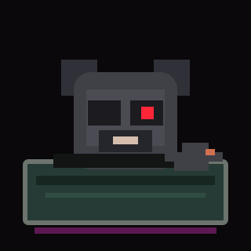

BAG HITS BIN
Capture the exact launch event, block, transaction, token and ArcPad-reported creator address.
A MEMECOIN ATTACHED TO A USEFUL RAT
He gets the scraps. You get the receipts.
New launches hit the dumpster. BINRAT follows the address on the bag, remembers the old bags, and shows exactly what he found.

THE DUMPSTER
HOW HE DIGS
Capture the exact launch event, block, transaction, token and ArcPad-reported creator address.
Link that reported creator address to earlier ArcPad launches without pretending it proves a human identity.
Collect factual observations: prior outcomes, distribution, metadata and anything still unresolved.
Bind the result to evidence and coverage so the joke can never outrank the record underneath it.
It does not prove a token is safe, a creator is honest, two addresses belong to the same human, or a price will go up. Missing evidence stays missing.